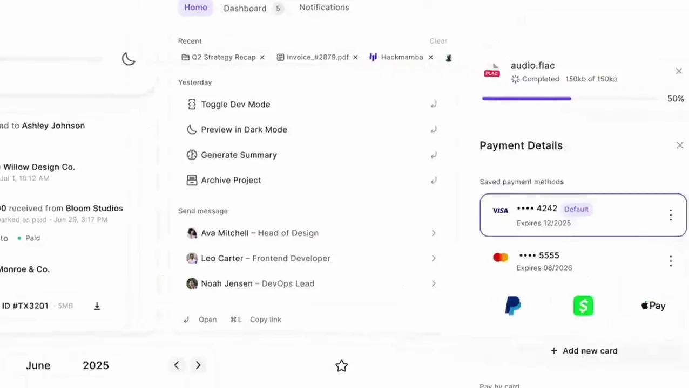
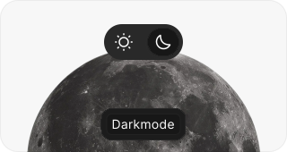
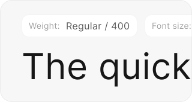
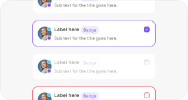
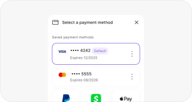
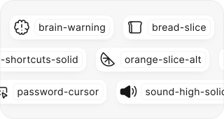
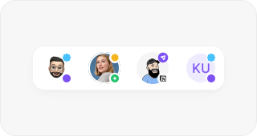

KernUI
A design system of 3,000+ components and 1,600+ icons on one token system, so designers and developers stop rebuilding the same button on every project.
KernUI
3,000+ components on one token system

Intro
Most design systems get abandoned. It's not that teams don't want one. It's that they end up too brittle to change, too generic to fit a real product, or too expensive to keep alive.
KernUI is my answer to that: a production UI kit for product teams, with 3,000+ components, 1,600+ icons, light and dark themes, and one token system underneath all of it. Flexible enough to take on a brand, and structured enough to hand off cleanly.
My role
All of it, solo: the architecture, every component and its docs, the tokens and theming, the icon library, and the pricing, brand and site that sell it.
Problem
Teams lose hours rebuilding the same buttons, form fields and navigation on every project. The problem isn't effort, it's repetition, and every new project resets the clock.
Existing kits tend to fail one of two ways. Too generic, and every interface looks the same. Too rigid, and you can't bend it to fit a real product. Either way the handoff breaks, because the kit only speaks one of design or code.
System
Tokens first
Colour, spacing, type and radius are all variables, never hard-coded values. That's what makes theming free: switching from light to dark swaps the variables, and not a single component has to be touched.


Built in layers
Atoms like buttons, inputs and badges make up molecules like cards, modals and nav bars, and those make up templates. Every state is designed (default, hover, focus, error, disabled), so there's nothing left for a developer to guess, and the same state logic runs through every component.


Icons
1,600+ icons, sorted by category. Every one sits on the same 24px grid, comes in two weights, and exports as both SVG and a ready-made component.

Avatars
Three kinds (photos, illustrations and memojis), each with default and colour variants, and slots at the top and bottom for status, notifications and actions.

Pricing
There are three tiers. Free has the palette, type, icons, and the logo and flag sets. Startup, at $99, unlocks the full variable system, the pre-built components and ongoing updates. Enterprise is custom, with dedicated support, team training and bespoke design work.
Free was a deliberate choice. Giving the palette and icons away meant people could live with the system before paying for it, and the ones who upgraded were the ones who'd hit the edges of what free covers.
Impact
1,200+ designers and developers use KernUI. The feedback that comes up most is that it cuts the back-and-forth between design and development, so teams spend less time arguing about spacing and more time shipping.
It's also the foundation the rest of my work is built on. Luotain runs on its tokens, and Yöte's inputs came out of that product.
Lessons
Documentation is half the product. A component without usage guidance gets misused or ignored, and the time I spent on docs paid itself back in fewer support questions.
A design system is never finished. The ones that get abandoned are usually the ones that tried to be complete before launch. KernUI shipped incomplete and grew from what people actually asked for, and that's still the right call.
connect
I’m always up for talking to thoughtful people about design systems, interfaces, and the code they turn into. Reach me at shatermt@gmail.com, or find me on X and GitHub.